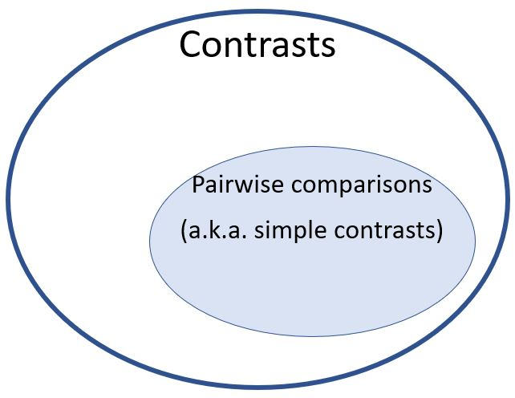

myaov <- aov(Y ~ X, data = df)
mymeans <- emmeans(myaov, "X")Contrasts
What is a Contrast?
The ANOVA F test is considered an omnibus test, meaning it tests all the factor levels of a factor at once. If the test suggests the null hypothesis should be rejected it seems to give rise to more questions than answers. Specifically, you will want to know which factor levels are significantly different from which other factor levels.
Usually during the design of an experiment, the researcher has specific comparisons in mind that are of particular interest. For example, they may be interested in comparing treatment effects for two dosing levels. These pre-planned comparisons usually drive the experimental design. When it comes time for analysis, an omnibus F-test test may be skipped entirely in favor of jumping directly to the planned comparisons. Or, if the F-test finds statistical significance, the researcher may follow-up with focused post-hoc tests of specific factor levels.
When one factor level mean is compared to another, it is called a pairwise comparison, or simple contrasts. For example, in our toothbrush experiment we may be interested in comparing the oscillating brush to the control group (manual brush). Or we may be especially interested in comparing sonic to ultra sonic.
Less commonly, the comparison of interest may involve averages of two or more factor level means. This is most likely to occur when the factor levels lend themselves to natural groupings that may be of particular interest to compare. For example, we may want to compare the mean of the sonic and ultrasonic groups to the mean of the oscillating group. Another example might include a comparison of the average of all the “treatment” toothbrushes vs. the control group (manual). When an average across groups is involved, this is called a complex comparison, or linear contrast.
We can represent the null hypotheses of these 4 example contrasts as:
Though contrast and comparison are technically synonomous, “comparison” most often refers to simple, pairwise comparisons; and “contrast” refers to complex comparisons.

\(\begin{aligned} H_0: \mu_\text{osc} - \mu_\text{man} = 0 \end{aligned}\)
\(\begin{aligned} H_0: \mu_\text{sonic} - \mu_\text{ultra} = 0 \end{aligned}\)
\(\begin{aligned} H_0: \mu_\text{osc} - \frac{\mu_\text{sonic} + \mu_\text{ultra}}{2} = 0 \end{aligned}\)
\(\begin{aligned} H_0: \mu_\text{man} - \frac{\mu_\text{osc} + \mu_\text{sonic} + \mu_\text{ultra}}{3} = 0 \end{aligned}\)
The above hypotheses can all be expressed as a sum, where each factor level mean is multiplied by a coefficient. When a factor level is not a part of the hypotheses, it has a coefficient of zero.
| Four Null Hypotheses | Left Hand Side of Hypotheses Expressed as a Sum of Means and Coefficients |
|---|---|
| \(\begin{aligned}\mu_\text{osc} - \mu_\text{man} = 0 \end{aligned}\) | \(-1*\mu_\text{man} + 1*\mu_\text{osc} + 0*\mu_\text{sonic} + 0*\mu_\text{ultra}\) |
| \(\begin{aligned}\mu_\text{sonic} - \mu_\text{ultra} = 0 \end{aligned}\) | \(0*\mu_\text{man} + 0*\mu_\text{osc} + 1*\mu_\text{sonic} + -1*\mu_\text{ultra}\) |
| \(\begin{aligned}\mu_\text{osc} - \frac{\mu_\text{sonic} + \mu_\text{ultra}}{2} = 0 \end{aligned}\) | \(0*\mu_\text{man} + 1*\mu_\text{osc} + -\frac{1}{2}*\mu_\text{sonic} + -\frac{1}{2}*\mu_\text{ultra}\) |
| \(\begin{aligned}\mu_\text{man} - \frac{\mu_\text{osc} + \mu_\text{sonic} + \mu_\text{ultra}}{3} = 0 \end{aligned}\) | \(1*\mu_\text{man} + -\frac{1}{3}*\mu_\text{osc} + -\frac{1}{3}*\mu_\text{sonic} + -\frac{1}{3}*\mu_\text{ultra}\) |
The contents in the right column of Table 1 are referred to as contrasts. We will use the symbol \(\psi\) to represent the contrast. A contrast is formed by multiplying each factor level mean by a coefficient. Simply put, it is a weighted sum. The above hypotheses are all examples of valid contrasts. To be considered a valid contrast, the only restriction is that the sum of the coefficients must be zero. We will often write coefficients used in a contrast as a set, in curly braces as shown in Table 2. Thinking of a contrast in terms of its set of coefficients is helpful for identifying orthogonality of contrasts. Also, when calculating/testing a contrast with software, you are required to input the set (or vector) of coefficients to define the contrast.
| \(H_0\) | Contrast (\(\psi\)) Tested in \(H_0\) | Set of Contrast Coefficients |
|---|---|---|
| \(\begin{aligned}\mu_\text{osc} - \mu_\text{man} = 0 \end{aligned}\) | \(-1*\mu_\text{man} + 1*\mu_\text{osc} + 0*\mu_\text{sonic} + 0*\mu_\text{ultra}\) | \(\{ -1, 1, 0, 0 \}\) |
| \(\begin{aligned}\mu_\text{sonic} - \mu_\text{ultra} = 0 \end{aligned}\) | \(0*\mu_\text{man} + 0*\mu_\text{osc} + 1*\mu_\text{sonic} + -1*\mu_\text{ultra}\) | \(\{ 0, 0, 1, -1 \}\) |
| \(\begin{aligned}\mu_\text{osc} - \frac{\mu_\text{sonic} + \mu_\text{ultra}}{2} = 0 \end{aligned}\) | \(0*\mu_\text{man} + 1*\mu_\text{osc} + -\frac{1}{2}*\mu_\text{sonic} + -\frac{1}{2}*\mu_\text{ultra}\) | \(\{ 0, 1, -\frac{1}{2}, -\frac{1}{2} \}\) |
| \(\begin{aligned}\mu_\text{man} - \frac{\mu_\text{osc} + \mu_\text{sonic} + \mu_\text{ultra}}{3} = 0 \end{aligned}\) | \(1*\mu_\text{man} + -\frac{1}{3}*\mu_\text{osc} + -\frac{1}{3}*\mu_\text{sonic} + -\frac{1}{3}*\mu_\text{ultra}\) | \(\{ 1, -\frac{1}{3}, -\frac{1}{3}, -\frac{1}{3} \}\) |
There are an infinite number of contrasts that could be tested. Realistically though, the contrasts that make sense to test are generally obvious and depend on your understanding/context of the experiment. Testing pairwise comparisons (i.e. simple contrasts where the coefficients are either -1, 0, or 1) is quite common; averaging across certain factor level means as part of the comparison is less common, but is still something you should be prepared to do. Contrasts can get quite complicated, especially for experiments with complicated designs. In this class though we will stick to relatively simple situations.
Testing a Contrast
t-test for Pairwise Comparisons
Pairwise comparisons (i.e. simple contrasts) of means using a t-test is something you are probably familiar with from previous statistics classes. The procedure was most likely called something like, “independent samples t-test of two means”. We can build on that understanding to come up with a more general approach that will allow us to test any contrast.
Recall, that a t-test for one sample has the general form:
\[ t = \frac{\bar{y} - \mu_0}{s_\bar{y}} \]
Where \(\bar{y}\) is the sample mean, \(\mu_0\) is the value from the null hypothesis, and \(s_\bar{y}\) is the standard error of the mean. We can expand this to test whether a difference of two means is zero, in other words an independent samples t-test of two means. Recall, that in ANOVA we assume constant variance across factor levels. (This is a slightly different assumption, resulting in a slightly different calculation than the independent samples t-tests presented in Math221 and Math3251).
Standard error of the mean is equal to standard deviation of the individual observations divided by square root of the sample size, \(s_\bar{y} = \frac{s_y}{\sqrt{n}}\). See Math221 text for review.
In our toothbrush experiment, if we want to test whether the mean of manual brushes is equal to the mean of oscillating brushes we have for our null hypothesis:
\[ H_0: \mu_\text{man} - \mu_\text{osc} = 0 \]
We use a t statistic:
\[ t = \frac{(\bar{y}_\text{man} - \bar{y}_\text{osc})}{\sqrt{s^2_p*(\frac{1}{n_1} + \frac{1}{n_2})}} \qquad(1)\]
The difference in the numerator is calculated directly from the contrast (multiplying the set of coefficients by their respective factor level mean). In the denominator, the pooled variance (\(s^2_p\)) is identical to the mean squared error from the ANOVA summary table. The degrees of freedom for this test statistic are equivalent to the residual degrees of freedom.
Note, by using the MSE from the ANOVA summary table we are taking advantage of information about residual errors contained in the observations of sonic and ultrasonic brushes as well as the observations from manual and oscillating. This leads to a better estimate of the size of random error.
For our study on toothbrushes we have the model:
\[ y_\text{ij} = \mu + \alpha_i + \epsilon_\text{ij} \qquad(2)\]
Where
- \(y_\text{ij}\) is an observation
- \(\mu\) is the grand mean
- \(\alpha_i\) represents the effect of factor level \(i\)
- \(\epsilon_\text{ij}\) is the residual error for the \(j^\text{th}\) observation in factor level \(i\)
Below is the table of factor level means and the ANOVA summary table.
Code
```{r}
#| label: tbl-brush_analysis
#| message: false
#| tbl-cap: "Toothbrush Experiment Results"
#| tbl-subcap:
#| - "Factor Level Means"
#| - "ANOVA Summary Table"
#| layout-ncol: 2
#| code-fold: true
bf2 <- read_csv("data/toothpaste_BF2.csv")
means_tbl <- bf2 |> group_by(Brush) |> summarise(mean = mean(Plaque),
`sample size` = n())
means_tbl |> pander::pander()
brush_aov <- aov(Plaque~Brush, data = bf2)
summary(brush_aov) |> pander::pander()
#These lines store values in variables so that I can write them in
#the latex equation below programmatically rather than hardcoding them
mean_man <- means_tbl[[1,2]]
mean_osc <- means_tbl[[2,2]]
nsize <- means_tbl[[1,3]]
mse <- summary(brush_aov)[[1]][2,3] #This gets the number from the summary table
tstat <- (mean_man - mean_osc)/sqrt(mse*(1/nsize + 1/nsize))
pprob <- pt(q=tstat, df=brush_aov$df.resid, lower.tail=FALSE) * 2
```Table 3: Toothbrush Experiment Results
| Brush | mean | sample size |
|---|---|---|
| Manual | 23.09 | 6 |
| Oscillating | 19.98 | 6 |
| Sonic | 22.67 | 6 |
| Ultrasonic | 25.31 | 6 |
| Df | Sum Sq | Mean Sq | F value | Pr(>F) | |
|---|---|---|---|---|---|
| Brush | 3 | 86.31 | 28.77 | 3.822 | 0.02583 |
| Residuals | 20 | 150.6 | 7.528 | NA | NA |
Plugging the values from Table 3 into Equation 1 we can calculate the t statistic:
\[ t = \frac{ 3.11 }{\sqrt{ 7.53 * (\frac{1}{ 6 } + \frac{1}{ 6 })}} = 1.97 \qquad(3)\]
A t statistic of 1.97 leads to a p-value of 0.063. Since the p-value is greater than our traditional alpha of 0.05, we fail to reject the null hypothesis of equality. In other words, there is insufficient evidence to claim that the manual brush and the oscillating brush have different mean values for percent area of teeth with plaque.
t-test for Any Contrast
This same t-test approach can be extended so that we can test any contrast, not just pairwise comparisons. To extend the approach, recognize that the \(1's\) in Equation 3 appearing directly above each sample size actually represent the squared coefficient of the contrast (see Table 1). Thus, Equation 1 used to compare two factor level means, is actually just a special case of a more general formula, Equation 4, which allows us to perform a hypothesis test of any contrast. This equation continues with the general structure of a t statistic: the numerator contains a sample estimate of the difference, the denominator is the standard error of that difference.
\[ t = \frac{\hat{\psi}}{s_\hat{\psi}} = \frac{\hat{\psi}}{\sqrt{MSE * \sum(c^2_j / n_j)}} \qquad(4)\]
Where,
- \(\hat{\psi}\) is an estimate of the contrast, obtained by multiplying each factor level mean by its respective contrast coefficient. For a simple pairwise comparison, it is just the difference in means.
- \(MSE\) is the mean squares of residuals obtained from the ANOVA summary table
- \(c_j\) is the coefficient for the \(j^\text{th}\) factor level and
- \(n_j\) is the sample size of the \(j^\text{th}\) factor level.
The degrees of freedom for \(t\) will be equal to the degrees of freedom for residual error in the ANOVA summary table.
Let’s use this more general approach in Equation 4 to test the fourth hypothesis contained in Table Table 1. Our alternative hypothesis will be the contrast is not equal to zero. Though you can use directional (i.e. 1-tailed) tests of a contrast, the default is to use a two-tailed alternative hypothesis of “not equal to zero”.
Plugging the values from Table 3 into Equation 4 we can calculate the t statistic:
Numerator: \[ \hat{\psi} = 1 * 23.09 + -\frac{1}{3} * 19.98 + -\frac{1}{3} * 22.67 + -\frac{1}{3} * 25.31 = 0.438 \]
Denominator: \[ s_\hat{\psi} = \sqrt{MSE * \sum(c^2_j / n_j)} = \sqrt{ 7.53 * \left( \frac{1^2}{6} + \frac{-\frac{1}{3}^2}{6} + \frac{-\frac{1}{3}^2}{6} + \frac{-\frac{1}{3}^2}{6} \right) } = 1.294 \]
t statistic: \[ t = \frac{\hat{\psi}}{s_\hat{\psi}} = \frac{0.438}{1.294} = .34 \qquad(5)\]
A test statistic \(t_\text{20} = .34\) is not large enough to be significant.
Danger
Actually, it does not make a lot of sense to compare the control group (manual brush) to the average of the other three brushes. For a contrast of the control mean vs. average of the treatments to make sense, the treatments would need to have more commonality. For example, if there were two treatments and both used oscillating toothbrushes: one oscillated in a clockwise fashion and the other oscillated in a counter-clockwise. In that case it would make sense to combine the treatment factor levels since they could be interpreted generally as “oscillating brush”. Then you could compare the average of the oscillating groups against the average of the control group (manual brush).
F-test vs. t-test
We could have reached exactly the same conclusions by conducting an appropriate F test for the contrast instead of a t-test2. It can be shown that \(F = t^2\). When t is based on the degrees of freedom for residuals, and F has \(df_\text{numerator}\) = 1 and \(df_\text{denominator} = df_\text{residuals}\) , the two tests given identical p-values and thus lead to the same conclusion.
R Instructions
This section illustrates just one way to test custom contrasts in R. There are many packages, each with their unique syntax, for computing and testing contrasts. As you work more in the field, you may find another package better suits your needs.
There are sets of comparisons (a.k.a. contrasts) that are commonly done in practice. The calculation of these sets can be obtained with simpler code than what is shown here but may require other R packages. In addition, when testing multiple contrasts simultaneously there are potentially other adjustments that should be made. Please read “Multiple Comparisons” to understand what other adjustments to consider as well as the R code for conducting these common sets of comparisons.
Caution, the contrasts() function from the stats package in base R will produce the correct p-value for the test of a contrast, but without extra work will not produce the correct estimate of the contrast itself. For this reason, we illustrate estimating and testing the contrast with the emmeans package, which stands for “estimated marginal means”.
The first step is to create the model. Then use the emmeans() command to create a grid of factor level summary statistics, including: means, standard deviations, standard error, degrees of freedom associated with the standard error estimate, and confidence intervals around the mean. Unlike a summarize() or favstats() command, emmeans() has the output structured so that it can easily be used in the next step. Store the grid of means into a new object.
myaovis some name you come up with to store the results of theaov()model.Ymust be a “numeric” vector of the quantitative response variable.Xis a qualitative variable (should have class(X) equal to factor or character. If it does not, usefactor(X)inside theaov(Y ~ factor(X),...)command.dfis the name of your data set.mymeansis some name you come up with to store the results of theemmeans()command.
Define the contrasts your are interested in testing inside the contrast() function, which returns the hypothesis test results. You can also feed the result into a confint() function if you prefer confidence intervals over p-values.
contrast(brush_means,list(name_of_contrast1 = coefficient vector,
name_of_contrast2 = another coefficient vector))) name_of_contrast are descriptive names you should give to the contrast to help you remember what it represents. The coefficient vector is how you define the contrast.
We will repeat the contrasts we did by hand in the sections above, but this time using R.
Example Code Using Toothbrush Experiment:
df The name you want for your dataset <- The assignment operator. The result to the right of it gets stored in an object specified on the left read_csv(“../data/toothpaste_BF2.csv”) A tidyverse command to read the data in from the specified path
plaque_aov Name you want for your ANOVA model <- The assignment operator. The result to the right of it gets stored in an object specified on the left aov( A function to define the model Plaque The response, or y, variable in the model. It is numeric. ~ The ~ is like an equal sign in the model. Items on the left of ~ represent y, on the right you define independent factors (i.e. x’s). Brush, The independent variable containing the names for the 4 types of toothbrushes. data = df Tell the model to look in the dataset named “df” for Plaque and Brush variables ) Functions always end with a closing parenthesis
brush_means The name you want for the output of the emmeans command <- The assignment operator. The result to the right of it gets stored in an object specified on the left emmeans( Function to calculate stats about marginal means plaque_aov, aov model created in previous step “Brush” Factor for whose levels you want to calculate means ) Functions always end with a closing parenthesis
contrast_results Name you want to store contrast results in <- The assignment operator. The result to the right of it gets stored in an object specified on the left contrast( Function to define and test contrasts brush_means, Grid of stats about marginal means you named in the previous step list( create a list object, which allows you to pass multiple contrast coefficient vectors man_v_osc = A descriptive name to help you remember what the contrast represents c(1,-1,0,0) Vector of coefficients used to define the contrast , Seperator to allow additional inputs to the list
man_v_others = A descriptive name to help you remember what the contrast represents c(1,-(1/3),-(1/3),-(1/3)) Vector of coefficients used to define the contrast ), A list is closed with a parenthesis adjust = Specify what type of adjustment (if any) to make for multiple testing. Default is “none” if this argument is not included. “none” Read help at ?summary.emmGrid for other acceptable values ) Functions always end with a closing parenthesis
contrast_results View the test results stored in this object in the previous step
confint( Function to create confidence intervals around contrasts contrast_results Name of object where you stored contrasts ) Functions always end with a closing parenthesis
Toggle output Toggle Output.
contrast estimate SE df t.ratio p.value
man_v_osc 3.117 1.58 20 1.967 0.0632
man_v_others 0.438 1.29 20 0.339 0.7382 contrast estimate SE df lower.CL upper.CL
man_v_osc 3.117 1.58 20 -0.188 6.42
man_v_others 0.438 1.29 20 -2.260 3.14
Confidence level used: 0.95 Othogonal Contrast
Stay tuned…Under Construction
Footnotes
t-tests of pairwise comparisons with non-constant variance would result in the independent samples t-test presented in Math221 and Math325. More complicated contrasts assuming non-constant variance is explained in Design and Analysis: A Researcher’s Handbook by Keppel, G. and Wickens T.D. (2004, Pearson), starting on page 156.↩︎
The appropriate F-test consists of calculating the mean squares of the contrast and dividing by the mean squared error. In most cases, the contrast has 1 degree of freedom, so the contrast sum of squares is equal to the contrast mean squares. The formula to calculate a contrast sum of squares is
\[ SS_{\psi} = \frac{n*\hat{\psi}^2}{\sum{c_j^2}} \]
The contrast has just 1 degree of freedom because it compares just two sets of observations. This is true even for complex comparisons: each set of observations may come from one factor level, or from a combination of factor levels.↩︎